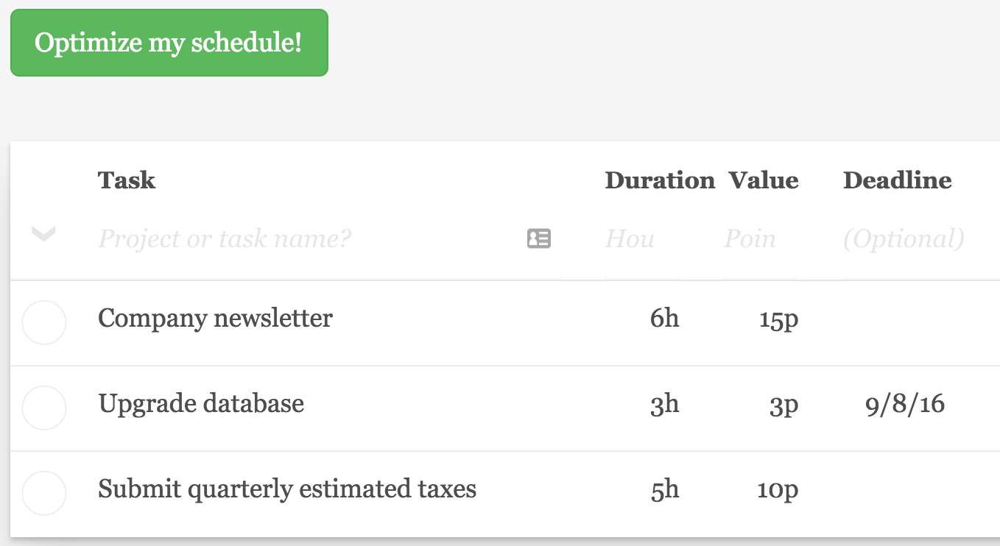
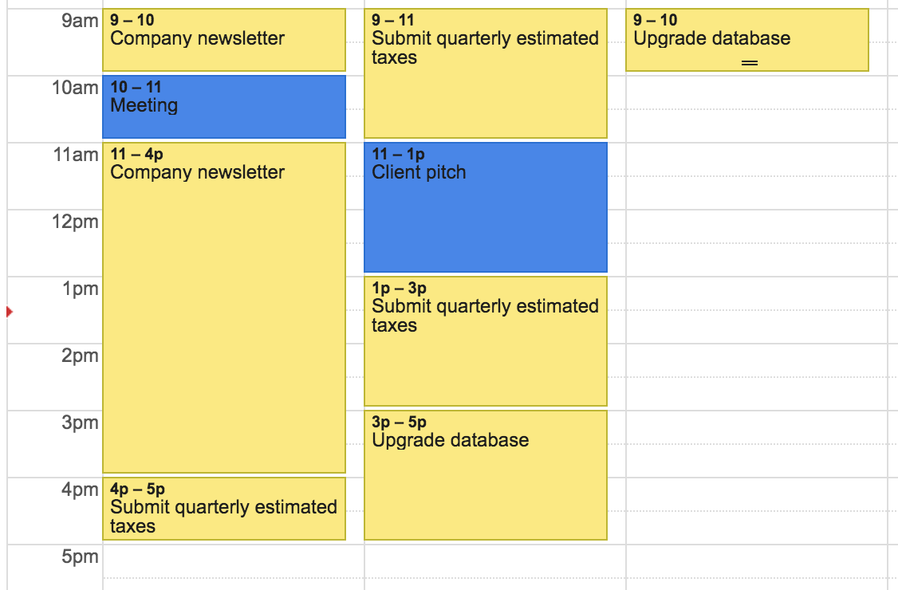

Drowning in projects, appointments and deadlines?
My newly built personal scheduler, wizweek.com is here to help! It maximizes your impact given your deadlines and appointments, and syncs your optimized schedule to Google calendar.
You identify your larger tasks, give each a time estimate and a business value estimate, plus optimally a deadline and earliest start date.

You also choose one of your Google calendars to be your "tasks" calendar and one to be your "appointments" calendar.
When you click "Optimize my schedule!" WizWeek will form your optimal schedule (or inform you that you are overcommitted!) It will then sync it to your tasks calendar.

How it works
WizWeek allows you to set up a weekly work schedule, e.g. 9am-5pm Monday to Friday. It will only schedule your tasks within those hours, and only when you don't have a meeting on your appointments calendar.
Within those remaining free work hours, it will first prioritize a schedule where you will meet your deadlines. For remaining flexibility in your work schedule, it will put the highest impact tasks first as measured by business value per hour. It will also make sure not to schedule a task until it's minimum start date if specified.
WizWeek currently only allows time estimates for tasks to be one hour or more. The thinking is that you would use a separate list for all your shorter tasks. Then you could create a single larger task like "Small tasks" and add it to your list to schedule some time in your week.
Inspiration
My dad was the direct inspiration for this tool; each week he organizes his tasks on a spreadsheet that will optimize them then syncs that to his Outlook calendar1.
But this approach accords with what I've read from productivity experts. David Allen has championed the idea of doing a "weekly review" of your commitments2, and Matt Perman emphasized that "time is like space" and that we need to put commitments on a schedule to avoid overload3.
Technical details
WizWeek is composed of three main components, all of which are open sourced on GitHub.
- wizweek-web is an AngularJS single page application for wizweek.com itself. It interacts with Google API's to do the authentication and calendar synchronization.
- wizweek-scheduler is a Go web service that does the schedule optimization using a linear program that it calls via golp, my Go wrapper for the LPSolve C library.
- wizweek-api is a Python API that allows wizweek.com to store tasks and settings data in the Google Cloud Datastore.
If you like the service, let me know. I welcome suggestions and even code contributions to improve it.
Footnotes
You can read about his Excel spreadsheet and download a copy for yourself at his website john.raffensperger.org. ↩
“What do you do the last week before you leave on a big trip? You clean up, close up, clarify, and renegotiate all your agreements with yourself and others. I just suggest that you do this weekly instead of yearly.” David Allen of Getting Things Done ↩
“Just as there is only so much stuff we can fit into our closets, so also there is only so much stuff we can fit into our days. If we don't think in terms of a basic schedule ... we end up in overload.” Matt Perman of What's Best Next ↩